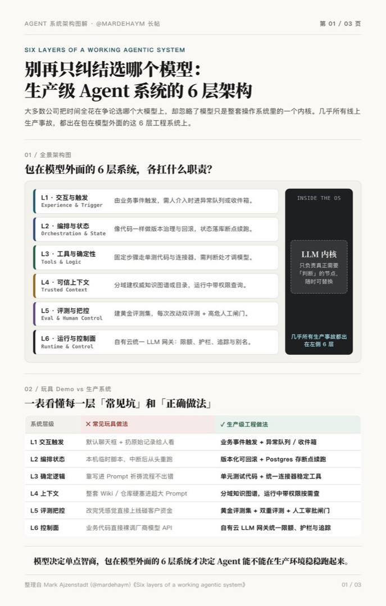
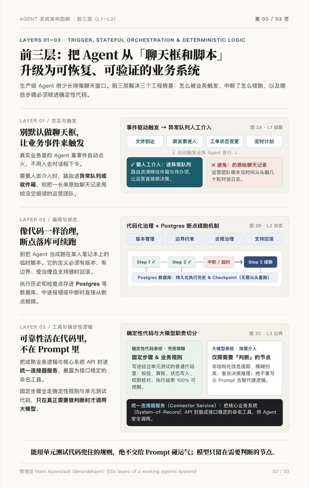
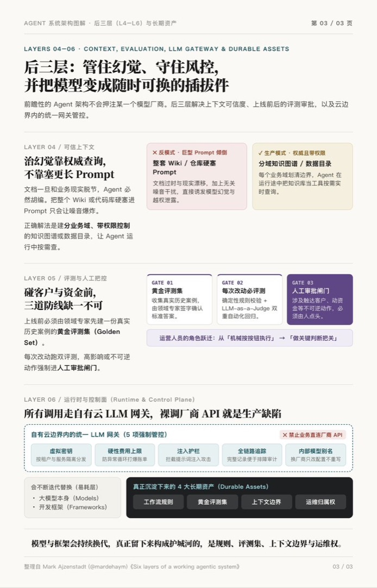
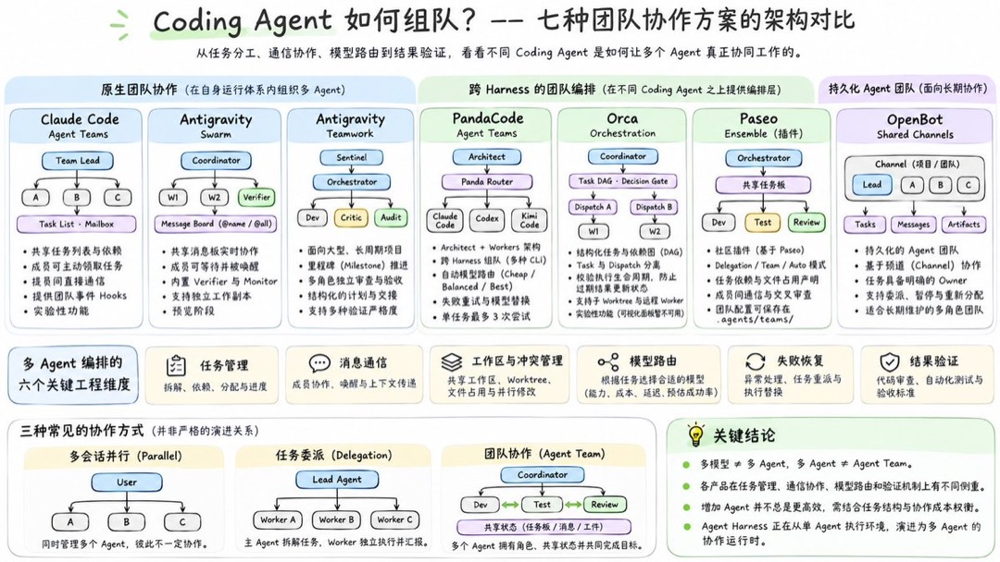
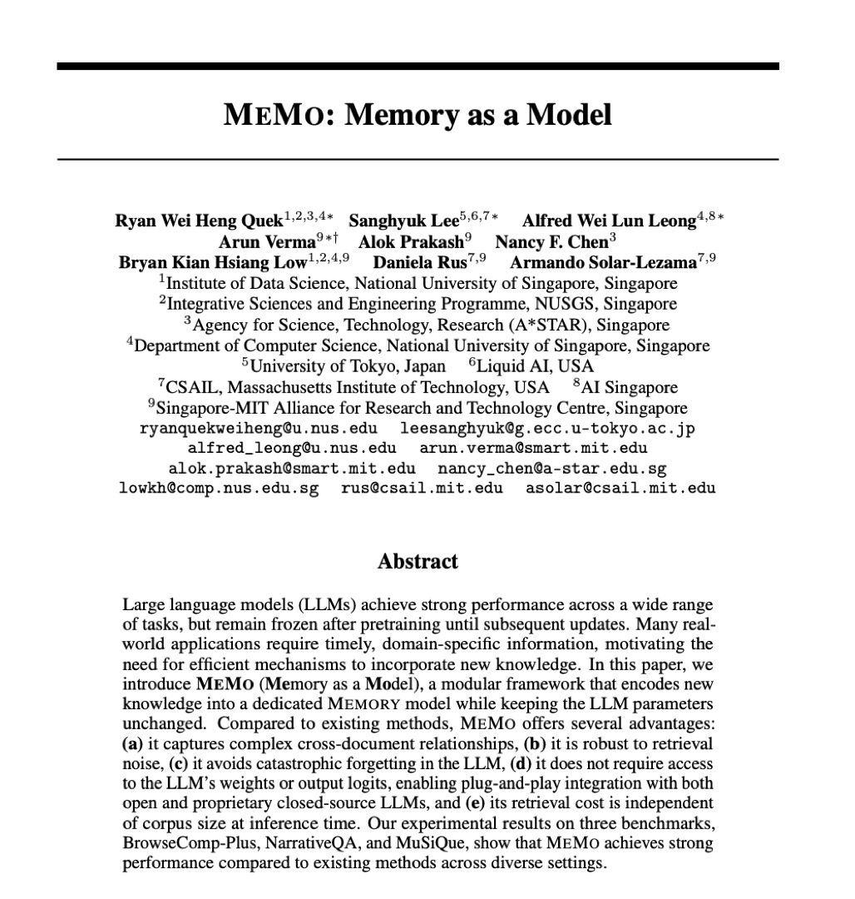

本期速览
01 Uber 自建 MCP Gateway 实践
03 Coding Agent 七种多智能体协作方案对比
04 MIT MeMo 用小记忆模型替代 RAG
05 Anthropic 用 Rust 重写 Messages API
07 Roller 统一采集 Agent 执行轨迹
01｜Uber 自建 MCP Gateway 实践
来源（X） · @pvergadia · 2026-11-27 11:29
中文译文
Uber 如何打造他们自己的 MCP Gateway，以及你如何也能做到！https://x.com/i/article/2117614258976706561
原文
How Uber made their own MCP Gateway and how you can make it too! https://x.com/i/article/2117614258976706561
02｜企业级 Agent 需六层工程系统支撑
来源（X） · @double_burger_2 · 2026-11-27 00:32
怎么从聊天框和本机脚本升级成事件触发、断点续跑、确定性代码兜底，再到分域上下文、黄金评测集和自有云 LLM 网关。模型和框架会一直换代，真正留下来构成护城河的，是规则、评测集、上下文边界和运维权。



引用内容
Mark Ajzenstadt @mardehaym
中文译文
一个可工作的智能体系统有六层。
大多数公司把时间花在争论该选哪个模型上。模型坐落在一个更大的操作系统之内，而几乎每一次生产故障都发生在围绕它的这六层里。
> 第一层：体验与触发。不要再默认用一个聊天框。真正的业务智能体由事件触发：文件到达、收到发票、工单状态变更或定时计划。当智能体需要人类时，它应路由到异常队列或收件箱，而不是一份运维团队没人有时间去读的原始聊天记录。
> 第二层：编排与状态。不要再把智能体当成躺在某人笔记本电脑上的脚本。智能体定义应当像任何其他代码产物一样被版本化、有边界、受治理，并具备回滚能力。把执行历史和检查点存储在 Postgres 这样的数据库中，这样被中断的运行可以从断点恢复，而不是从头重启。
> 第三层：工具与确定性逻辑。保证应放在朴素的、经过单元测试的代码里，而不是放在提示词里。把你已验证的业务逻辑和记录系统 API 封装在一个连接器服务之后，作为具有稳定接口的具名工具。让确定性规则处理固定步骤，只在确实需要判断的地方调用模型。
> 第四层：可信上下文。不要把你的整个 wiki 或代码仓库塞进一个巨大的提示词里。给每个领域各自划定范围的知识图谱或数据目录，让智能体在运行过程中作为工具去查询。当文档与现实脱节时，智能体就会产生幻觉。解决办法不是更长的提示词，而是权威的、权限感知的上下文。
> 第五层：评估与人类控制。在智能体接触客户或动钱之前，先构建一组由你的领域专家认可为正确的真实历史案例黄金集。对每一次变更运行确定性检查和 LLM-as-a-judge 评估，并对任何高影响或不可逆的操作保留人工审批关卡。操作员不再按按钮，而是开始做判断。
> 第六层：运行时与控制平面。每一次模型调用都通过你自己云环境边界内的一个 LLM 网关。直接调用供应商 API 是一种生产缺陷。按租户和服务强制执行虚拟密钥、硬性支出上限、提示词注入防护、完整追踪，以及内部模型别名，这样更换供应商只是一次配置变更，而不是重写。
模型和框架会不断变化。持久的资产是你的工作流规则、评估集、上下文边界和运维归属。
原文
There are six layers to a working agentic system.
Most companies spend their time debating which model to pick. The model sits inside a larger operating system, and almost every production failure happens in the six layers wrapped around it.
> Layer one: experience and trigger. Stop defaulting to a chat box. Real business agents fire on an event: a file arrival, an incoming invoice, a ticket status change, or a schedule. When the agent needs a human, it routes to an exception queue or inbox, not a raw chat transcript nobody on the ops team has time to read.
> Layer two: orchestration and state. Stop treating agents like scripts sitting on someone's laptop. An agent definition should be versioned, bounded, and governed like any other code artifact, with rollback. Store execution history and checkpoints in a database like Postgres so an interrupted run resumes where it left off instead of restarting from scratch.
> Layer three: tools and deterministic logic. The guarantees live in plain, unit-tested code, not in the prompt. Wrap your proven business logic and system-of-record APIs behind one connector service as named tools with stable interfaces. Let deterministic rules handle the fixed steps, and call the model only where judgment is actually required.
> Layer four: trusted context. Do not dump your whole wiki or repo into a giant prompt. Give each domain its own scoped knowledge graph or data catalog that the agent queries mid-run as a tool. When documentation drifts from reality, agents hallucinate. The fix is not a longer prompt. It is authoritative, permission-aware context.
> Layer five: evaluation and human control. Before an agent touches a customer or moves money, build a golden set of real past cases that your domain experts agree are right. Run deterministic checks and LLM-as-a-judge evaluations on every change, and keep a human approval gate on any high-impact or irreversible action. Operators stop pressing buttons and start judging.
> Layer six: runtime and control plane. Every model call goes through one LLM gateway inside your own cloud perimeter. Direct calls to a vendor API are a production defect. Enforce virtual keys per tenant and service, hard spend caps, prompt-injection guardrails, full traces, and internal model aliases so swapping providers is a configuration change, not a rewrite.
Models and frameworks will keep changing. The durable assets are your workflow rules, evaluation sets, context boundaries, and operational ownership.
03｜Coding Agent 七种多智能体协作方案对比
来源（X） · @meow2149 · 2026-11-27 10:22
最近研究了几种 Coding Agent 的多 Agent 协作方案，发现不同产品在团队编排上的设计各有巧思。
Claude Code 有 Agent Teams，Antigravity 有 Swarm 和 Teamwork，PandaCode、Orca、Paseo 等工具也在不同 Coding Agent 之上构建了自己的编排层。
同时开几个 Agent 并不难，难的是让它们围绕同一个目标工作。
比如前端 Agent 需要知道后端 Agent 定义的接口，测试 Agent 需要等待功能实现，Review Agent 发现问题后，还需要把任务交回对应的开发 Agent。
这些任务怎么分配，成员之间怎么通信，如何避免代码冲突，失败后怎么恢复，最终又由谁来验收？
结合官方文档和公开源码，整理了目前很有代表性的七种协作方案。
1. Claude Code · Agent Teams
Claude Code 的 Agent Teams 由四个核心组件组成：Team Lead、Teammates、Task List 和 Mailbox。
Lead 负责创建团队、协调任务和汇总结果，每个 Teammate 都是一个拥有独立上下文的 Claude Code 实例，成员之间可以直接通信。
具备 Task 工具的成员既可以接受 Lead 分配的任务，也可以从共享任务列表中主动领取未分配且依赖已解除的任务。任务认领通过文件锁避免竞争。
Claude Code 还提供了 TeammateIdle、TaskCreated、TaskCompleted 等 Hooks，可在成员进入空闲状态、任务创建或完成时执行额外检查。
有意思的是，现在 Claude Code 中显式命名的 Subagent 也可以互相发送消息。
因此，能否直接通信已不能作为区分 Subagent 和 Agent Teams 的唯一依据，更需要关注它们的会话组织方式、团队级任务状态以及成员的自主协调能力。
目前 Agent Teams 仍属于实验性功能，默认关闭。
2. Antigravity · Swarm
Google Antigravity 的 /swarm 主要围绕一块共享消息板（Message Board）展开协作。
当前会话作为 Coordinator，负责拆解任务、创建具名 Worker，并明确每个成员的工作范围和完成标准。
成员之间通过 @name、@group 或 @all 在共享消息板上交流，暂时没有任务的成员可以进入等待状态，被其他成员提及时再唤醒。
Swarm 还引入了两个专门的辅助角色：
▪ Verifier：检查代码变更、运行测试，并将发现的问题反馈给对应的 Worker。
▪ Monitor：当任务尚未完成、团队却陷入沉默时，提醒相关成员继续推进。
Worker 默认复用当前会话的模型和工作区，也可以指定其他可用模型，或为可能产生编辑冲突的任务启用独立工作副本。
桌面端还提供 Graph 视图，可以查看成员之间的通信关系和消息流转过程。
这套机制适合按模块、文件或调研方向拆解的并行任务，目前仍处于预览阶段。
3. Antigravity · Teamwork
Antigravity 还有一个 /teamwork，面向更复杂、执行周期更长的项目。
它会先和用户确认项目需求、约束及验收标准，确认后再进入自主执行阶段。
Sentinel 负责项目入口、整体协调和最终汇报，Project Orchestrator 则负责拆解里程碑，并组织不同角色推进项目。
除了负责调研和开发的 Explorers、Workers，还引入了多种审查与验收角色：
▪ Critic：审查代码质量和逻辑正确性。
▪ Challenger：寻找边界条件和潜在问题。
▪ Auditor：检查实现完整性和测试证据。
▪ Success Auditor：负责项目的最终验收。
团队通过结构化的需求、计划和进度文件进行信息传递与上下文交接，同时配合文件所有权分配机制，以及不同严格程度的验证模式。
Swarm 更侧重单次任务中的并行协作与实时通信，Teamwork 则更关注长期项目的阶段性交付和独立验收。
目前 /teamwork 面向付费套餐用户开放。
4. PandaCode · Agent Teams
前面介绍的 Claude Code 和 Antigravity 都是在自身的 Agent 运行体系内组队。
PandaCode 则可以把 Claude Code、Codex、Pi、OpenCode 等不同 Harness 的执行实例放进同一个团队。
它采用 Architect + Workers 架构，Architect 负责规划、任务分派和结果审查，Worker 拥有独立会话，并通过团队邮箱、共享笔记和进度检查点进行协作。
任务可以声明依赖关系和文件修改范围，调度层会对存在已声明写入冲突的任务进行串行调度。
不过，Worker 使用的是父任务所在的 checkout，并不会自动为每个 Worker 创建独立的 Worktree。文件范围声明也不等同于文件系统级别的隔离。
PandaCode 最让我感兴趣的是它的 Panda Router。
启用自动路由后，系统会在本地分析任务特征，结合模型能力评分、成本、延迟和预估成功率，为 Worker 选择合适的模型。
目前提供三种自动组队策略：
▪ Cheap：在满足最低预估成功率要求的候选模型中，优先降低成本。
▪ Balanced：综合考虑预估成功率、成本和延迟。
▪ Best：优先选择预估成功率更高的模型。
它还会区分两种不同的失败情况。
如果是 Harness 本身出现运行故障，会尝试通过其他可用 Harness 运行同一个模型。
如果模型正常完成了任务，但结果未通过 Architect 的测试或审查，则会重新分派任务，由路由器尝试更强的模型。
自动路由对同一项任务最多进行三次尝试，包括首次执行和两次重试。
PandaCode 不仅在做多 Agent 编排，也把模型选择和执行环境的故障恢复放进了同一套协作机制里。
5. Orca · Orchestration
Orca 的多 Agent 编排更接近一套结构化任务调度系统。
其中有五个核心对象：
▪ Run：一次协作的持久化命名空间及协调者收件箱。
▪ Task：记录任务描述、依赖关系和执行状态。
▪ Dispatch：某个 Task 的一次具体分派与执行。
▪ Message：传递问题、进度、心跳和完成报告。
▪ Decision Gate：在相关决策解决之前阻塞任务推进。
其中 Task 和 Dispatch 的分离特别值得研究。
假设一个 Worker 执行失败，Coordinator 将任务重新分派给另一个 Worker。
此时 Task ID 没有改变，但对应的 Dispatch ID 已经变了。
如果旧 Worker 这时才发回完成报告，Orca 会校验发送者、Task 与 Dispatch 的对应关系，以及该 Dispatch 是否仍然有效，避免过期的执行结果误改任务状态。
这部分在 Orca 的生命周期管理源码中有明确实现。
此外，Orca 还支持 DAG 任务依赖、受监督的 Worker、子 Worktree 和远程执行。
当然，Dispatch 校验只能解决任务状态的一致性问题，并不能撤销旧 Worker 已经产生的文件修改或外部副作用，这仍然需要执行隔离等机制配合。
目前 Orchestration 仍属于实验性功能，官方文档注明其可视化面板及对应开关暂时不可用。
6. Paseo · Ensemble
Paseo 本身已经提供了跨 Provider 的 Agent 启动、Worktree 管理和消息通信能力。
社区插件 Ensemble 则在这些基础能力之上，实现了一套团队协作流程。
它提供三种模式：
▪ Delegation：Orchestrator 拆解并分派任务，成员独立执行，再汇报结果。
▪ Team：确认需求和计划后建立共享任务板，成员按依赖领取任务、声明文件占用、互相通信，并在开发完成后进行交叉审查。
▪ Auto：由 Orchestrator 选择 Team 或 Delegation，首次启动协作后锁定当前会话的协作模式。
虽然 Paseo 本身支持 Worktree 管理，但 Ensemble 的团队成员共享 Orchestrator 所在的 checkout，主要通过任务认领和文件占用声明协调并行修改。
我很喜欢 Ensemble 对团队配置的处理方式。
成员、角色、模型和协作模式可以保存在项目的 .agents/teams/ 目录下，通过 Git 进行版本管理。
比如一个项目可以配置专门负责前端、后端、测试和代码审查的 Agent，再为每个角色选择不同的模型和指令。
其他开发者也可以复用这套配置，不需要每次都重新组建团队。
这相当于把 Agent Team 的组织方式也变成了项目工程配置的一部分。
7. OpenBot · Shared Channels
OpenBot 的团队协作方式更像是把一组长期使用的 Agent 拉进同一个群聊。
每个 Agent 都有独立的身份、指令、模型、会话和工作空间，多个 Agent 可以通过共享频道进行协作。
一个 Channel 可以包含多名 Agent，也可以设置负责请求路由的 Lead，并维护独立的消息和任务记录。
用户可以直接指定某个成员处理请求，也可以让 Lead 根据内容选择合适的成员，还可以让多个成员分别给出自己的结果。
频道中的每个任务都有明确的 Owner，支持委派子任务和转移任务所有权。
OpenBot 通过 SQLite 持久化频道记录、任务及相关执行状态，并支持任务暂停、恢复和重新分配。
这种协作方式并不局限于 Coding Agent。
完全可以组建一支包含开发、代码审查、信息调研和内容运营等不同角色的团队，根据日常需求持续安排任务。
相比 Orca 围绕任务生命周期展开的编排，OpenBot 更关注持久化的 Agent 成员和长期协作关系。
多 Agent 编排需要解决哪些工程问题？
看完这些项目，可以从六个维度来理解它们的设计：
▪ 任务管理：任务拆解、依赖关系与所有权。
▪ 消息通信：成员间的信息传递、按需唤醒和上下文管理。
▪ 工作区与冲突管理：Worktree、文件占用和并行修改。
▪ 执行单元选择与模型路由：如何为不同任务选择合适的 Harness 和模型。
▪ 失败恢复：异常退出、任务重派和过期执行结果。
▪ 结果验证：代码审查、测试和验收标准。
不同产品在这些环节各有侧重，几种协作机制之间也并不互斥。
而且 Agent 数量并不是越多越好。
如果任务之间存在强依赖，或者多个 Agent 需要频繁修改同一份代码，额外的通信、调度和验证成本，很可能会抵消并行执行带来的收益。
之前研究 Agent Harness 时，更多关注的是如何让单个 Agent 管理好上下文、调用工具并完成任务。
现在再看这些多 Agent 编排项目，会发现 Harness 需要处理的事情已经延伸到了任务调度、消息通信、资源管理、状态一致性和结果验证。
很多传统分布式系统和软件工程中的经典问题，正在 Agent 工程中重新出现。
这也是我最近觉得多 Agent 编排特别值得研究的地方。

04｜MIT MeMo 用小记忆模型替代 RAG
来源（X） · @Teikoui06 · 2026-11-27 07:43
不再搞向量库了，专门训一个小的“记忆模型”把文档吃进去。主模型完全不动，推理的时候就像问证人一样问它三轮，就能精准把事实抠出来。（看起来是）
数据挺炸的：长文档直接翻倍（53.6% vs RAG的23.2%），往里面塞一堆假干扰文档，RAG掉分它几乎纹丝不动。更狠的是换更强的主模型不用重训，性能还能再跳一截。
目前这个实验数据很好看，但是不知道用起来怎么样
引用内容
CrazyShyyt @CrazyShyyt
中文译文
RAG 正式死亡 🤯
MIT 造了一个不需要 RAG 的 AI。
它叫 MeMo，不是把知识存进数据库，而是在你的文档上训练一个小型、专用的 Memory 模型。
在推理时，你的主前沿 LLM 保持 100% 冻结。没有向量数据库。没有分块。没有权重访问。
它只是用 3 个快速轮次询问 Memory 模型，就像侦探询问证人一样，来提取确切事实并综合出答案。
结果非常残酷：
• NarrativeQA（长文档）：53.6% 对 RAG 的 23.2%（好两倍以上）。
• 噪声测试：用假的干扰项把语料库翻倍。RAG 暴跌 -6.2%。MeMo 纹丝不动（+0.55%）。
而那个隐藏优势呢？它完全即插即用。
把 Memory 模型训练一次。当他们把主 LLM 从 Qwen2.5-32B 升级到 Gemini 3.0 Flash 且零重训时，准确率一夜之间跃升 +26.7%。
我们花了 3 年时间试图通过构建更好的搜索引擎来修复 AI 记忆。
事实证明，答案是给模型第二个大脑。
原文
RAG is officially dead 🤯
MIT built an AI that doesn't need RAG.
It’s called MeMo, instead of storing knowledge in a database, you train a small, dedicated Memory model on your documents.
At inference time, your main frontier LLM stays 100% frozen. No vector DB. No chunking. No weight access.
It simply interrogates the Memory model in 3 quick turns, like a detective questioning a witness, to pull exact facts and synthesize the answer.
The results are brutal:
• NarrativeQA (long documents): 53.6% vs. RAG’s 23.2% (more than 2x better).
• Noise test: Doubled the corpus with fake distractors. RAG tanked -6.2%. MeMo didn't flinch (+0.55%).
And the sleeper advantage? It’s completely plug-and-play.
Train the Memory model once. When they upgraded the main LLM from Qwen2.5-32B to Gemini 3.0 Flash with zero retraining, accuracy jumped +26.7% overnight.
We spent 3 years trying to fix AI memory by building better search engines.
It turns out, the answer was giving the model a second brain.

05｜Anthropic 用 Rust 重写 Messages API
来源（X） · @Xudong07452910 · 2026-11-27 08:26
一个细节大家估计都知道。这两天服务所有 Claude Token 的 Messages API，原来是 Python 单体，几个工程师花了大约 5 个月用 Rust 重写，团队里甚至没有 Rust 专家。
我觉得整期的主线是 Anthropic 怎么决定哪些事交给 Claude、哪些还要人来，下面有几个非常值得借鉴：
1. 重写靠的是验证。 让 Rust 版在后台跟着 Python 版处理同一批线上请求（Shadow Traffic），不断对比结果，发现不一致就继续修。Katelyn 估计，工程师真正仔细看过的代码只有约 20%。
2. Code Review 已经高度自动化。 所有 PR 先交给 Claude 分类器，判断是否需要人工 Review、需要几个人、该交给哪个团队。像升级 SDK、修 flaky test 这类低风险改动，有些可以由另一个 Claude 审完后直接合并部署。
3. 线上值班也开始交给 Agent。 Claude 先跟着工程师值班几个月，确认它能分清真实告警和噪音后，才开始让它负责第一轮判断。不过，真正处理线上事故还没交给它。
4. 有些东西没变。 项目启动时的规划和跨团队对齐，花的时间跟以前差不多。工程师平均花在协调上的时间甚至比写代码还多。团队依然保持 5–8 人，系统归团队负责，值班也是整个团队的责任。
5. 面试和晋升也在调整。 一些很强的候选人反而卡在手写代码这一轮，因为平时已经很少这样写代码了。团队干脆停掉传统 Coding 面试，开始尝试和 Coding Agent 一起完成任务的面试方式。晋升也更看实际影响，比如省了多少 CPU、降低多少延迟、减少多少事故，而非项目花了多久。
我最认同 Katelyn 其中一句话，大意是只要能把事情变成可验证的，就不用盯着每一行代码。敢放手多少，基本取决于验证做得有多扎实。
📎 https://newsletter.pragmaticengineer.com/p/how-anthropic-builds-software-in
06｜DeepSeek 网页端展示对话费用明细
来源（X） · @Lniosytest · 2026-11-27 13:36
社区实拍里，费用是按官方空闲时段价估算的，输入大约 1 元/百万 tokens，输出 4 元/百万 tokens，跟现在 Flash 的 API 价对得上
有人那边货币显示成美元，可能跟 IP 有关
官方还没发公告，C 端聊天目前也还是免费，不是已经开始扣费
引用内容
李天才 @Lniosytest
多名网页和 App 用户反馈，用着用着就弹出“因服务器繁忙，使用额度已达上限”
据媒体报道，还有用户遇到单次输入缩到约4万字、超过7天不活跃的长对话无法继续的提示
App 评论里也有人反映72小时就不能继续对话，要求恢复文件读取上限
目前反馈里的规则并不一致，官方还没公布统一的每日额度，别把72小时和7天当成所有账号都一样的标准
07｜Roller 统一采集 Agent 执行轨迹
来源（X） · @Xudong07452910 · 2026-11-27 09:28
平时做 Agent 实验，不同 Harness 的日志格式各不相同，想复现一次运行、比较执行过程，或者把轨迹整理成训练数据，都挺麻烦。
Roller 把这些工作统一起来了。
它支持 Codex、Claude Code、OpenClaw、DeepSeek Harness 等主流 Harness，在隔离的 Docker 环境中批量运行任务，完整记录模型推理、工具调用、执行结果和生成文件。
比较实用的是，它能将不同 Harness 的轨迹转换成统一格式，导出 SFT 训练数据，也支持 Benchmark 自动评分、断点续跑和可视化检查。甚至可以直接导入本地已有的 Codex 和 Claude Code 会话。
这类工具对 Agent 研究还是很有价值的。执行轨迹是理解 Agent 为什么成功或失败的重要证据，也是后续 Evaluation、训练和 Harness 优化的基础。
把采集、评测和数据转换这几件事标准化，能省去不少重复的工程工作。
GitHub: https://github.com/Valen-Team/Roller